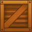

Tutorial
Page 3 of 15
Adding Sprites
As the game design document describes we will need two images for the two game objects. Such images are called sprites in GameMaker. There is a lot to know about sprites but, for the moment, simply think
of them as little images.
For making these images you can use any drawing program you like, for example the paint program that is part of any Windows system, but GameMaker also has a built-in sprite editor for this purpose. Creating
nice-looking sprites is an art that requires a lot of practice, but fortunately there are large collections of images of all sorts available for free. By searching the web and you are bound to find images in large quantities, but
make sure you read and follow the licences that accompany them before including them in any of your games.
For our little game we use the following two sprites, which can be found in the Game Assets folder that comes with this tutorial (this can be found by going to the Help menu and then selecting the
menu option Open Project In Explorer. Once there you should browse to \Assets).
The clown: The wall: 
To add these sprites to the game we proceed as follows:
- From the Resources drop down menu at the top of the main GameMaker window, choose Create Sprite. The Sprite Properties form appears, like the one shown below.
- Click on the Name field where currently is says sprite0 (the default name for the sprite). Rename it to "spr_clown".
- Click on the Load Sprite button. This opens a file browser.
- Navigate to the Game Assets folder that came with this tutorial and selected the image file clown.png. The sprite properties should now look like this:
- Press the OK button to close the form.
You should also now make the sprite origin at it's center. The origin is the point at which GameMaker:Studio will draw the sprite in the game room, and all you have to do here is press the button marked
Center to place the draw origin at the center of the sprite. You should also change the collision mask of the sprite to be the full image and a circle as we will want it to bounce later and this mask
shape will give the best results. The collision mask is what GameMaker:Studio will use to base all the collisions between different instances off of and as such it enables you to give a complex sprite a simple collision
shape, as you can see in this image:
Next we will add the wall object in the same way:
- From the Resources menu, choose Create Sprite. Click on the Name field and rename it to "spr_wall".
- Click on the Load Sprite button and select the image file wall.png.
- Press the OK button to close the form.
No need to change the origin, nor the collision mask for this sprite as they are fine as they are.
As you might have noticed, the clown and wall sprite have now appeared in the list of resources at the left of the Game Maker window. Here you will always find all the sprites, sounds, objects, rooms, etc. that you have created
in your game. Together we call them the resources of the game. You can select a resource by clicking on its name, and then you can use the Edit menu to change the resource, duplicate it, or delete it. Right-clicking on the resource
name will show a similar menu. This overview of resources will become crucial when you are creating more complicated games.
Click on the Next button to go to the next page of the tutorial.